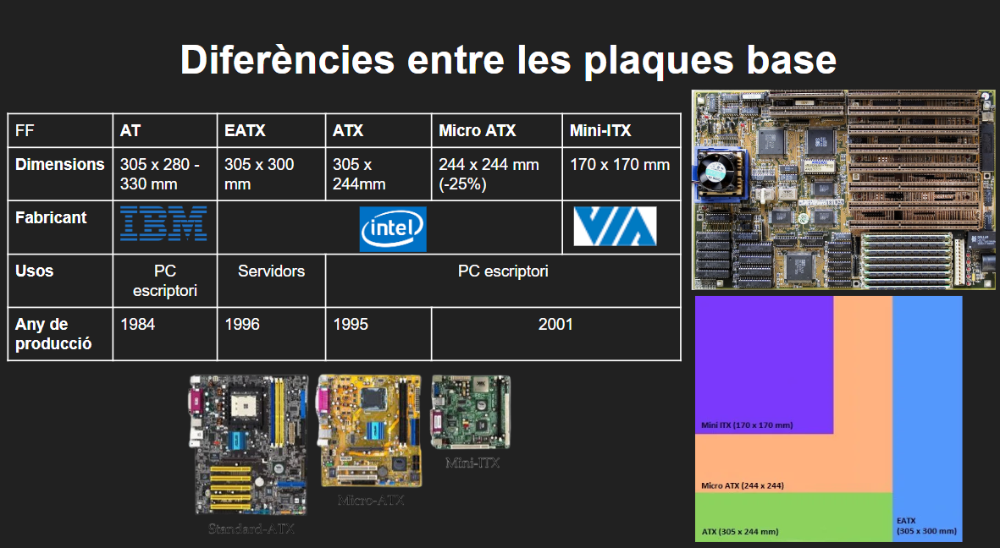
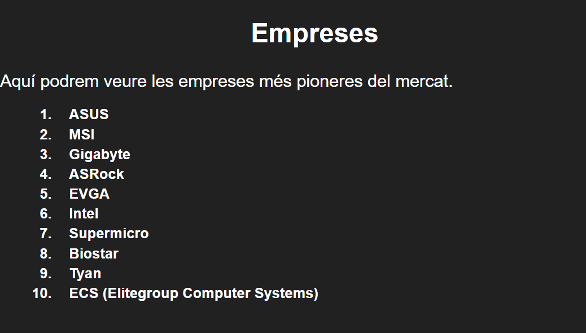

En aquesta imatge podem veure la diferencia entres les plaques bases que tenim a dia d'avui en el mercat

presentació del porjecte
Per altre bande aqui podem veure avui en dia les empreses més vendedoras que vem torbar i el perque d'elles.